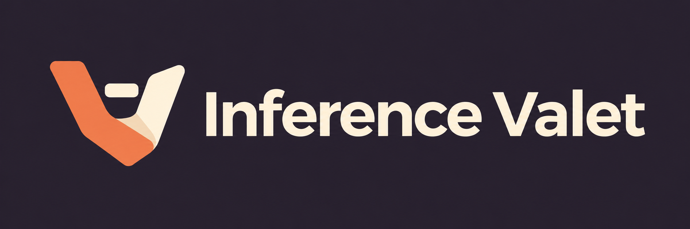

A fresh identity for Inference Valet: two folded planes cradle a compute token. Warm vermilion, parchment and aubergine.

Icon PNG · Windows ICO · Logo PNG · Generation prompts
Generated with the built-in image_gen tool. Windows ICO contains16,24,32,48,64,128 and256px entries. PNG masters preserved. Versioned project assets; running application uses this identity.